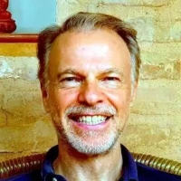

The Omani initiative "Tolerance, Understanding, Coexistence - Oman's message of peace" has received appreciation from sixty-nine international, academic, diplomatic and media staff of different faiths and nationalities.
Here are a few examples for quotes of some renowned public figures about the initiative:
“It is especially timely that this exhibition has now arrived at the United Nations Headquarters in New York. Although it is rooted in Omani traditions, including tolerance, this exhibition has a message for the world, because hatred is on the rise, from last month’s massacre at a mosque in New Zealand, to last October’s killings at a synagogue in Pittsburgh, to attacks on churches.”
“This exhibition is a contribution to promoting mutual understanding and peaceful coexistence. This exhibition is about better knowing each other – and seeing in each one of us our shared humanity. We thank the government and people of Oman for their support.”
“Let us all focus on what unites us, and work together to defend equality and dignity for everyone, everywhere.”
HE Under-Secretary-General Maria Luiza Viotti,
UN Chef de Cabinet

“We in India are well aware of Oman#s tradition of tolerance, which is a bridge of understanding between different cultures. We in india also greatly respect the Oman tradition of moderation.”
HE Ambassador Syed Akbaruddin,
Permanent Representative of India to UN

“I am happy to be with you in this important exhibition at this important time. This message is the message of Islam to the world. This message expresses the real essence of the Islam.”
“Therefore, I believe that this exhibition at this time is also consistent with the general feeling that we must all stand in the face of hatred and in the face of distortion of religions and in the face of the false image of the Islam, which does not reflect the truth of this tolerant religion.”
HE Ambassador Mohamed Idris,
Permanent Representative of Egypt to UN

“I am happy to be present at this important ceremony on the role of Islam in finding compromises and in achieving international peace and security, one of the main purposes of the United Nations. The Sultanate of Oman is distinguished by its moderate and impartial positions and is therefore highly appreciated by the Arab Group. It is also mandated to mediate disputes and disputes between our brothers.”
“We are proud of the role played by His Majesty Sultan Qaboos bin Said and the role played by the Ministry of Foreign Affairs and the Permanent Mission here in New York both in terms of the dissemination of moderate and far-reaching extremist thought, and in terms of supporting international efforts to find peaceful solutions to the existing global problems, especially the Arab problems, which we are seeing increasingly increase in our Arab world, and need a lot of effort.”
“We wish the Sultanate of Oman and its wise leadership success in its ongoing initiatives in this direction.”
HE Ambassador Majid Abdel-Fattah Abdel Aziz,
Permanent Observer of Arab League to UN

“It is good that this exhibition can highlight the vital importance of religious freedom in a world where such freedom is so often not respected.”
“It is also good that the positive resources of the Ibadhi school of Islam and the tolerant traditions of the Sultanate of Oman in particular are given more prominence. I trust that the exhibition will provide a space in which mutual sharing and learning can take place.”
The Most Revd. Mr Rowan Williams,
Archbishop of Canterbury
In a message to the audience at St. Philip’s Centre in Leicester on July 16, 2012.

“Exhibitions like this one help to shed light on the diversity of the world’s peoples. It helps to learn just a little bit more about the cultures of The Other, thus progressively moving all towards a rapprochement of cultures.”
“The inter-connected themes of ‘tolerance,’ ‘understanding,’ and ‘coexistence’ are the building blocks of a true culture of peace, based on a commitment to the universal principles of human dignity and mutual solidarity. This exhibition is an international project that is being shown for the first time here at UNESCO headquarters, and we are truly honoured to host such a fine event.”
HE Mr Mohamed Sameh Amr,
Chairperson of UNESCO Executive Board, Ambassador and Permanent Delegate of Egypt to UNESCO
On the occasion of the inauguration of the exhibition at the UNESCO Headquarters in Paris (France) on October 7, 2015.

“It is critical that we harness and learn from the best regional and national examples of inclusive outreach -- I am sure that this exhibition will nurture our determinations to pursue a more peaceful and just world.”
Mrs Nadha Al-Nashif,
UNESCO Assistant Director-General for Social and Human Sciences.
On the occasion of the inauguration of the exhibition at UNESCO Headquarters in Paris (France) on October 7, 2015.

“The exhibition comes at a very important time, as violence and extremism prevail throughout the world, confirming the need for tolerance, understanding and coexistence.”
HE Dr George Vella,
The President of Malta.
On the occasion of the inauguration of the exhibition in valletta (Malta) on October 24, 2014.

“Email or text messages can be used to exchange information, but to understand someone requires personal contact, personal encounters, conversations eye to eye. Some of you have come a long way to be here, specifically for the personal dialogue, for the mutual exchange. Achieving mutual understanding might be enabled through an argument with someone, resulting in agreement.”
“This exhibition opens a dialogue, enables inquiries, creates a meeting point which encourages direct communication. It stimulates discussions which are worth having, and it opens new perspectives for us on the religion of Islam and our life together, whether global or local. It is an important stone on the path to the future, which begins here today.”
Dipl. Theol. Meinrad Hörwick,
Catholic Church School Board.
On the occasion of the inauguration of the Exhibition at Vocational School No. 5 in Augsburg (Germany) on July 4, 2011.

“The exhibition aims at promoting interfaith dialogue, mutual understanding and peaceful co-existence. It promotes dialogue as a tool for reconciliation of cultural, social and ethnic differences by making aware of similarities instead of marking and looking into distinction and differences.”
Mr Christian Manhart,
UNESCO Representative to Nepal.
On the occasion of the opening ceremony at Patan Museum in Kathmandu (Nepal) on November 12, 2014.
Please visit our Virtual Global Exhibition in your preferred language